Como pensamos o catálogo
Um catálogo que liga peça, casa, material e história. Cada ligação tem um motivo.
1 · A ideia
Um catálogo comum mostra a peça sozinha. Aqui a peça aparece onde mora: na casa, no material, na história.
Nada entra sem fonte. Tudo vem do site, do Instagram da More ou da conversa de 15.10.
A conversa começa pela sala, não pelo preço. O botão é um só em todo lugar: [Conversar].
Nada aqui foi aprovado pela More. É uma proposta.
2 · O que existe hoje
| O que | Quanto | Observação |
|---|---|---|
| Peças publicadas | 24 | Todas com foto de estúdio, de 5 a 12 fotos cada |
| Grupos | Assentos 10, Mesas 7, Luminárias 4, Fixos 2, Estantes 1 | Fixos tem uma terceira peça a confirmar |
| Acabamentos | Madeira 12 (4 madeiras × 3 acabamentos), tecido 12, vidro pintado 7, metal pintado 7, metal natural 3, vidro fundido 4, cor 3 | Duas grafias a corrigir no site: "ebanidada" e "Velugo" |
| Amostras fotografadas | 12 madeiras, 12 tecidos | Vidro e metal ainda sem amostra |
| Medidas | 21 de 24 | Faltam Dominó, Moustache e Constantin; Cadeira Maria a conferir |
| Preço | 24, "a partir de" | TOM.01 e Dominó sem preço: "sob consulta" |
| Prazo | Sob encomenda, cerca de 120 dias | A TOM.01 tem pronta entrega |
| Casas fotografadas | 4 cenas de estúdio | Fotos da loja chegam depois de 05.11 |
| Histórias | 1, a campanha de 2025 | Dez pessoas creditadas |
| Linhas da More por peça | 14 peças | Do Instagram, sempre com o link do post |
3 · Três caminhos
| Índice | Por relação | Atlas sensorial | |
|---|---|---|---|
| Ideia | Tudo numa tabela, nada de lado | Peça, casa e material ligados por motivo | Entrar por situação, material e luz |
| Referência | Knoll, Vitsœ, MoMA | Are.na, MUBI | NTS, Cosmos |
| O que mostra | Medida, opção, preço e prazo | Cada peça com casa, material e legenda reais | Luz dura, matéria, forma |
| Risco | Frio. A cultura da More some. | Muito link, pouco catálogo | Inventar clima sem foto que sustente |
Por relação é o candidato. A More já tem legendas, cenas e uma história. O índice fica ao lado, para comparar. O atlas espera as fotos da loja.
4 · Desenhos
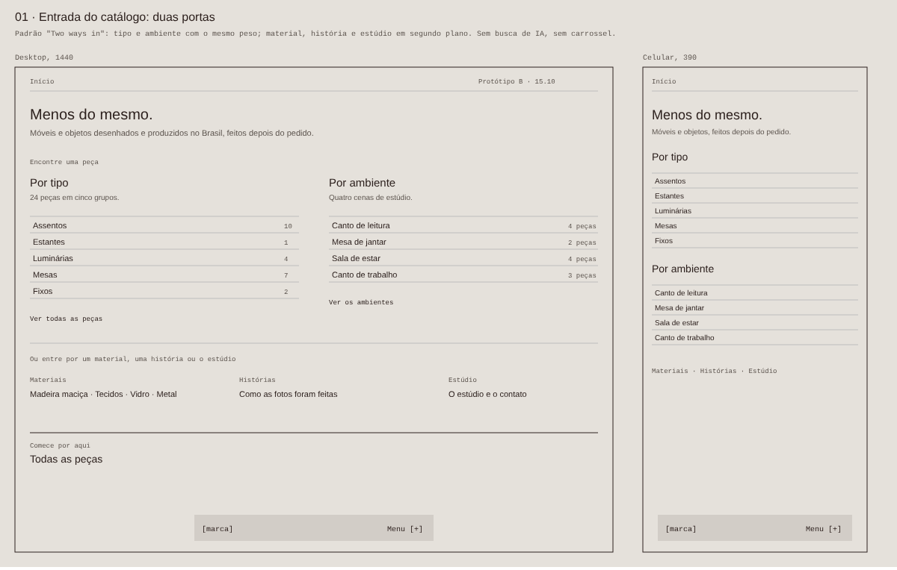
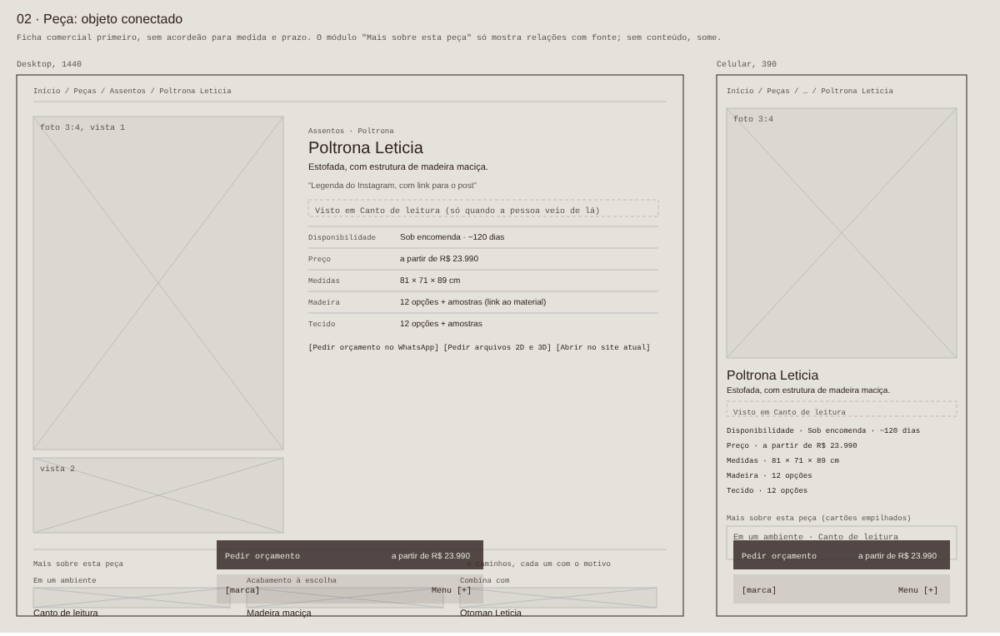
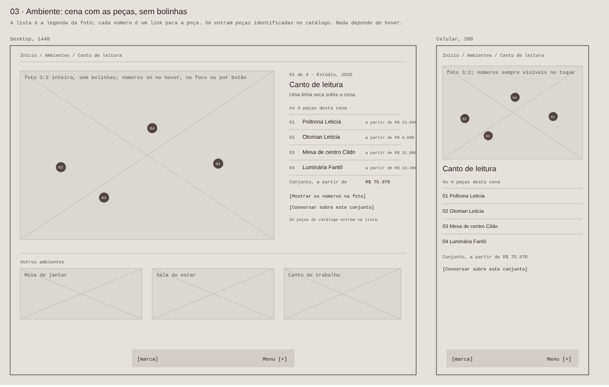
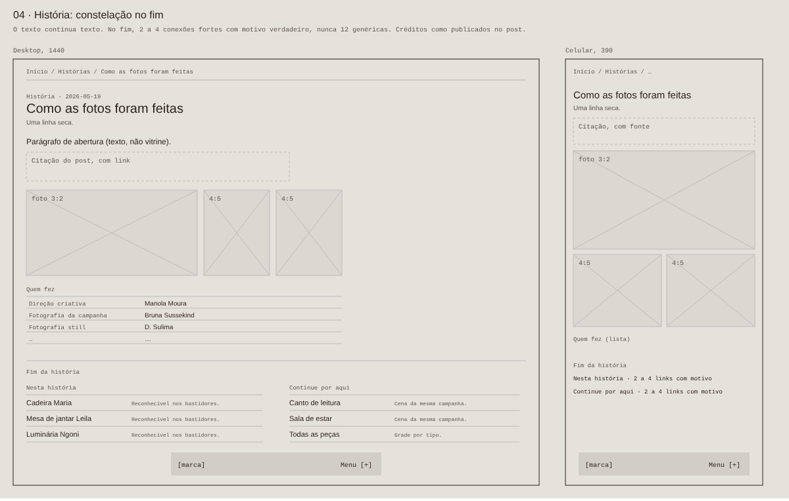
5 · Telas
No computador e no celular, acima da dobra.
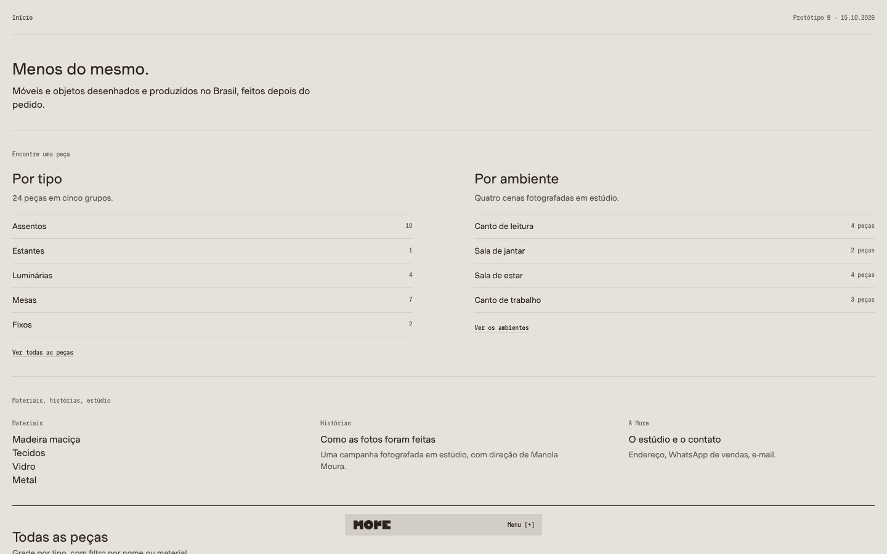
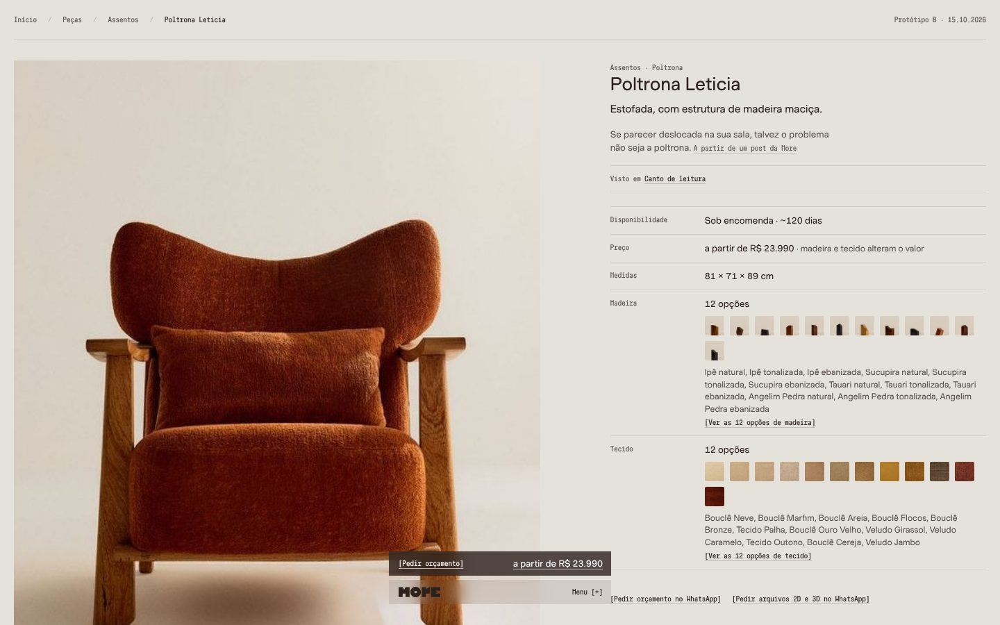
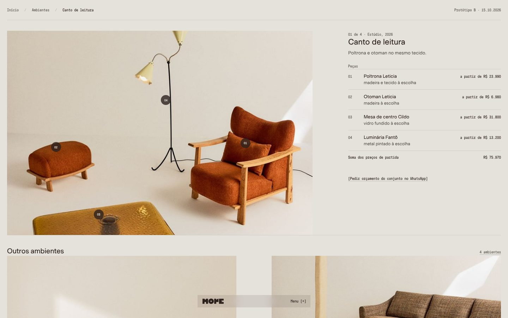
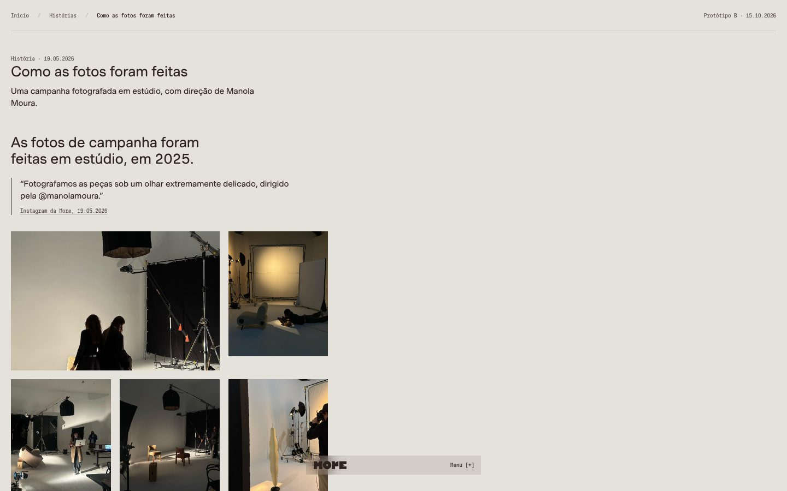
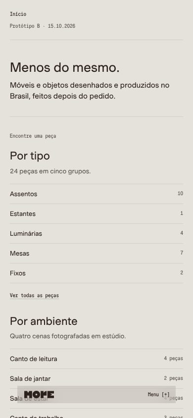
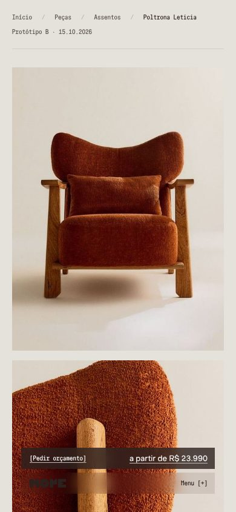
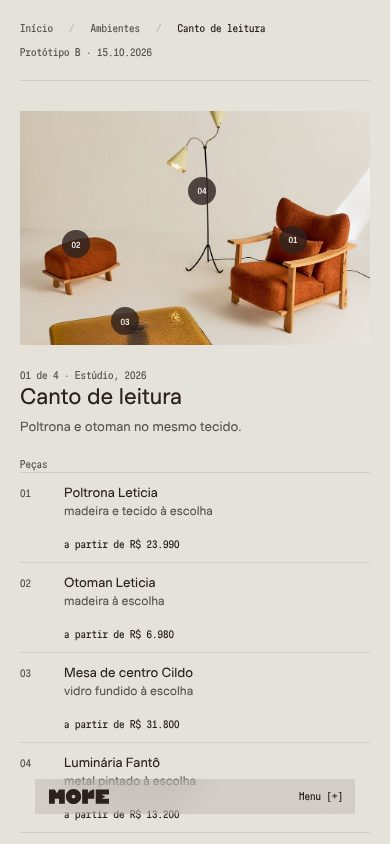
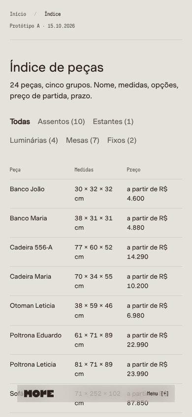
6 · O que falta da More
- O prazo de cada peça e a ordem das medidas.
- As medidas de Dominó, Moustache e Constantin.
- As peças de cada cena e dos bastidores, confirmadas.
- O nome da marcenaria, da serralharia e da estofaria, se a More quiser creditar.
- Como cada madeira muda com o tempo, peça por peça.
- Se a soma dos preços pode aparecer numa casa.
- Fotos da loja, depois de 05.11.
Nenhuma pessoa de fora testou ainda. O próximo passo é ouvir cinco.
7 · Fases
| Fase | O que entrega | Depende de |
|---|---|---|
| 1 · Levantamento (feito) | Inventário, caminhos, desenhos | — |
| 2 · Catálogo de teste (feito) | 24 peças, 4 casas, 4 materiais, 1 história | — |
| 3 · Ouvir | Cinco pessoas novas na marca usam o catálogo | Nomes, pela More |
| 4 · Loja on-line | Tudo nativo no Shopify, sem motor novo | Acesso ao admin e fotos da loja |
| 5 · Histórias | A More escreve e publica sozinha | Conteúdo da More |